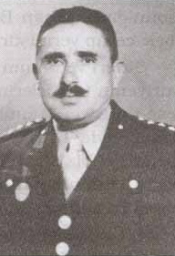

|
Hulusi_Yahyagil |
  
|
|
Hulusi_Yahyagil |
|
Albay Hacý Ýbrahim Hulusi Yahyagil [1895-1986]

1895'te Elazýð Harput'ta dünyaya geldi. Birinci Dünya Harbinde, Kafkas ve Çanakkale muharebelerinde bulundu. 1925 senesinde Harbiyeye girdi.Çanakkale'de yaralandým
Çanakkale harbinden evvel 3. Kolordu Tekirdað'da idi. Biz 9. Fýrka (tümen) olarak Çanakkale'ye geldik. Bir çok çýkartmalar yapýldý. Biz harbe giderken pilâv yemeye gider gibi hevesle gitmiþtik. 12 Nisan (Rumî 30-31 Mart) 1915'te Seddül-Bahir'e geldik. Anafartalar muharebesinde, Cenab-ý Hakkýn'ýn lütfu ile kurtulduk. Son taarruzda bütün subaylar ve erler abdestli olacaktý. Þayet su bulunmazsa teyemmüm edilecekti.
Yüzümden, kolumdan, göðsümden yaralandým. Çanakkale'de yaralanmam 26 Temmuz 1915'te Leyle-i Kadir'de oldu. Karadan, denizden top mermileri patlýyordu. Bir top mermisi önümde patladý. Ýki el ateþ ettim. Yanýmdaki asteðmen 'Silahla bir kaçýný temizleyeyim' dedi. Geri çekildim. Sol yanaðýma elimi attým. Baktým kanýyor. Sol koluma da kurþun isabet etmiþti. Artýk þuurum tam iþlemiyordu.
1 Ocak 1916'da Çanakkale'den ayrýldýk. Nisan'a kadar Kýrklareli'de kaldýk. Sonra Tekirdað üzerinden vapurla Haydarpaþa'ya geldik. Kuþdili Çayýrýnda ordugâh kurduk. Odunla iþleyen tren-i mahsusla (özel tren) yola çýktýk. Konya Ereðlisi, Niðde, Kayseri ve Sivas'a uðrayarak Karadeniz'e geldik. Ruslarý sahile kadar kovaladýk. Ruslar bizi Bayburt'ta sardý. Çanakkale'nin, Anafartalar'ýn, Çonkbayýrý'nýn dinç fýrkasý idik. Süngülü tüfek ile 'ALLAH- ALLAH' diye gidiyorduk.
Doðuda cebri yürüyüþle ilerliyorduk, sonra tepe tepe müdafaa ederek çekildik. Erzincan'ýn üstünden, Çardak Boðazýndan geçtik. 1916 senesinde Kafkas Cephesindeki muharebemiz, Erzincan'ýn batýsýnda mevzilenerek beklemek suretinde oldu. 1917'de Rusya'da Bolþeviklik çýktý. Zýmnî bir mütareke hüküm sürüyordu. Ruslar çekiliyordu. Ermeniler de silâhlarýný býrakarak çekiliyorlardý. Biz ilerlemeye baþladýk. Ermenileri temizleyerek ilerliyorduk. Kelkit, Þiran Erzurum Ilýcasý, Tortum'dan Sarýkamýþ'a geçtik. O sýrada Kâzým Karabekir Sarýkamýþ'taydý. Kars'a yürüdük. 1918'de Kars'ý birinci olarak ele geçirdik.
1. Cihan Harbi dolayýsýyla tahsilim yarýda kalmýþtý. Harbden sonra 1925'de tekrar mektebe baþladým. Nihayet Harbiyeden mezun oldum. Babam Yahyazâdelerden Mehmet Efendi, alaylý zabit idi. (Mektep görmeden ordu içinde yetiþen subaylar.)
...
1950 senesinde Albay rütbesiyle emekliye ayrýldý. Bediüzzaman'ýn ilk talebelerindendir. Hulusi Yahyagil, Bediüzzaman'a sorduðu kýymetli suallerle derya gibi bir ilim-irfan sarayýnýn kapýlarýnýn açýlmasýna vesile olmuþtur. 25 Temmuz 1986'da Elazýð'da vefat etti. (Kaynak: Son Þahitler)

HATIRALAR
Üstad'la ilk görüþmem
17 Ocak 1928'de Manisa'dan Eðridir'e gelmiþtim. O zaman rütbem yüzbaþý idi. Üstad'la tanýþmamýz bir sene sonra oldu 1929 yýlý baharýnda Barla'ya gittim. Beni götüren Mustafa isimli mübarek bir insandý. Ayrýca, Vecelle Hüseyin, Müderris Mustafa, Nefer Mehmet, Demirci Ustasý da vardý. Üstad'ý ilk ziyarette, yanýnda epey kalmýþtýk. Bu görüþme çok uzun sürdü. Müsaade isteyerek ayaða kalktýk. vedalaþýp ayrýldýk.
Yaðmurdan hiç ýslanmadým
Üstad'la görüþmelerimin birinde, görüþme bittikten sonra, 'Efendim Ýlama köyüne gideceðim' demiþtim. Üstad da "Kardaþým ben de camiye odun getirmek için daða gideceðim" dedi. Biz vedalaþtýk ve Ýlama'ya doðru yola çýktýk. Birden hatýrýma Üstad geldi, þimdi âniden önüme çýkmasýn diye düþünüyordum. Bizim nefer geride kalmýþtý. Az sonra baktým, Üstad Hazretleri, önde odun kafilesi arkada kendisi geliyorlardý. Ben, Üstad beni görüp de, attan inip rahatsýz olmasýn diye büyük bir aðacýn arkasýna saklandým. Tâ Üstad iyice yaklaþýnca birden bire ellerine sarýlýp, ellerini öptüm. O esnada elinde bir parça kuru ekmek vardý, onu yiyordu. Hemen onu bana verdi. Sonra:
"Senin þemsiyen yok mu kardaþým?" dedi.
Biz asker olduðumuz için þemsiye taþýmýyorduk.
"Üzerimde muþamba var Efendim' dedim."Havada ise pek yaðmur alâmeti yoktu. Üstad:
"Peki kardaþým Allah'a ýsmarladýk" deyip gitti. Az sonra yaðmur yaðmaya baþladý. Hiç yaðmur durmadý, atý süratle sürüyordum. Yaðmur saðanaðýnýn altýnda ilerlerken, yaðmur hiç bana deðmiyordu. Dört saat sonra hiç ýslanmadan Eðridir'e gelmiþtim.
Kendilerini ziyaretim hayatýmda inkýlâp yaptý
Kendilerini ziyaretim hayatýmda inkýlâp yapmýþtý. Öyle bir hâlet-i ruhiye içindeydim ki, yazdýðým mektuplardaki þevki, cevabî mektuplarýnda þu suretle ifade ediyordu:
"Neþr-i envar-ý Kur'âniyedeki muvaffakiyetin ve gayretin ve þevkin bir ikram-ý Ýlâhîdir, bir keramet-i Kur'âniyedir, bir inayet-i Rabbaniyedir. Sizi tebrik ediyorum."
Ufak hizmetleri bile büyük görüyordu. Bunlar bizi teþvik etmek içindi. Halbuki istidadýmýz nakýs olduðu halde çok teveccüh ediyordu.
Emrediyorum, üzülmeyeceksin!
Eðridir'den tayinim çýkmýþ. Doðuya gidiyordum, Hazret-i Üstad'dan ayrýlacaðým için çok üzgündüm. Üstad Hazretleri çok üzüldüðümü anlamýþtý. Bir gün yanýna ziyaretine gittiðimde (askerce): "Emrediyorum, merak etmeyeceksin! Üzülmeyeceksin!" dedi. O anda bütün üzüntüm, gam ve kederim yok oldu.
Üstadýn bazý beyanlarý
Binler selâm.. Siz maddî rütbenizden çok yüksek, manevî rütbeniz iktizasýyla, ayrý ayrý yerlere gönderiliyorsunuz. O yerlerin sana ihtiyacý var. Hiç merak etme! Senin Risaletü'n-Nur hakkýnda mektuplarýn çok talebeler yerinde, senin bedeline hizmet-i Nuriyede çalýþýyorlar. Birinciliði dâima sana kazandýrýyorlar. Kardeþiniz, Said Nursî
Yine Üstad Bediüzzaman, nurlu Albaya beyan ediyordu:
"Ben Isparta'dan mecburi ikamet için Barla'ya sevkedilirken, daha motorda iken, Barla'da ben sizi gördüm ve bana gösterildiniz."
Bir baþka hatýra tesbit notlarýmda Bediüzzaman þöyle diyordu:
"Meslek-i askeriyeden bu hizmete girecekler ve hýrz-ý can edecekler çýkacaktýr. Sen bunlarýn birincilerinden oldun. Allah'a þükret!"
Sözler'in baþýndaki þahýs
"Ey kardeþ! Benden birkaç nasihat istedin. Sen bir asker olduðun için askerlik temsilâtiyle, sekiz hikâyecikler ile birkaç hakikatý nefsimle beraber dinle." derken Üstadýn kastettiði asker siz misiniz?
Bu dersi, Üstad ben kendilerini ziyaret etmeden evvel yazmýþ. Burada bahsedilen asker ben deðilim. O asker manevi bir þahýstýr. Daha sonralarý askerlerden kendilerine talebe olacak kimseleri manen hissederek öyle yazmýþ.
Hulusi Yahyagil rahmetlinin bu cevabýndan sonra, aradan epeyce bir zaman geçmiþti. 1980 senelerinde ilk defa Barla Mektuplarý yayýnlanmýþtý. Bu lahikalardan yýllarca evvel Hulusi Aðabeyimin verdiði cevap meâlinde "Hulusi Bey'e Hitabdýr" baþlýðý altýnda yazýlan bir Barla mektubunda meselemizle alakalý olarak þunlarý okuyordum:
"Ben Sözler'i yazarken, ihtayarsýz olarak ekser temsilâtý, þuunat-ý askeriye nev'inden zuhur ediyordu. Ben hayret ediyordum. Neden böyle yazýyorum, sebebini bilmiyordum. Sonra hatýrýma geldi ki; belki istikbâlde þu Sözler'i hakkýyla anlayacak, kabul edip hýrz-ý cân edecek, en mühim ltalebeleri askeriyeden yetiþecek. Onun için böyle yazmaya mecbur oluyorum, düþünüp, o kahraman askerleri bekliyordum. Ýþte maðrur olma, þükret; sen o askerlerden bahtiyar birisin ki, evvel yetiþtin."
Ýbrahim Hulusi Yahyagil'in Nur derslerinin ilk talebesi olmasýndan sonraki geçen zaman içinde, Türk ordusunun mümtaz askerlerinden ve subaylarýndan bir çok bahtiyar þahsiyet Nurlara talebe olmuþlardý.
Bu subaylarýmýzý bir rahmet duasýna vesile olmasý için burada bazýlarýnýn isimlerini söylemek istiyoruz:
Refet, Hayri, Galib, Mehmed, Muhyiddin ve 1935 lerde Eskiþehir mahkemesinin baþlangýcý sayýlan Isparta'da muhakeme olurken, ifadesi alýndýðý sýrada vefat eden "Ýstikamet þehidi Binbaþý Âsým Bey".
Üstadýn Türk ordusuna bakýþý
Hulusi Bey, Üstadýnýn derslerinde bulunduðu sýrada, Üstad kendilerine þöyle hitap ediyordu:
"Ben Türk ordusunun aleyhinde bulunmam! Çünkü bu Türk ordusu Birinci Cihan Harbinde, Allah ve vatan yolunda bir milyon þehid vermiþtir!"
Keþke sen de hâfýz olsaydýn
Üstad bana "Kardeþim, keþke sen de hâfýz olsaydýn!" diye buyurmuþtu. Üstad Bediüzzaman'ýn bu temennisiyle Risale-i Nurlarýn hakikatlarý hafýzama yerleþmiþti.
Üstad hayatýnýn son senelerinde bana hitaben: "Kardaþým, sen ilk zamanlarda çekirdektin. Þimdi aðaç oldun." dedi.
Hediye meselesi
Hulusi aðabeyimiz'e çok ýsrarla hediye bahsi olan "Ýkinci Mektub"ta Üstad Bediüzzaman'a neyi hediye ettiðini sormuþtum. Tebessümle verdiði cevaplarda, Ýkinci Mektup'da Üstad'ýn yazýp yazmadýðýný sormuþtu. Biz de yazmadýðýný söylediðimizde, Üstadýn yazmadýðýný, dolayýsýyla kendilerinin de söylemeyeceðini ifade etmiþlerdi. Daha sonraki ziyaretlerimde bu hediyeyi, bizzat eline mi verdiðini veya Eðirdir'den bir vasýta ile mi gönderdiðini sorduðum zamanlar çok merak ettiðim meseleyi ve sualimin cevabýný bulmuþtum.
Sen sünnet bilmez
Bir ziyaretimde çay içerken tam olarak bitirmemiþtim. "Kardaþým sen sünnet bilmez" dedi. Bununla, içilen bir þeyin iyice bitirilmesinin sünnet olduðunu ters vermek istemiþti.
Bidayette akþam ile yatsý arasýnda kimseyi kabul etmezdi.
Ondaki nezaket
Ondaki nezaket ve tevazu bambaþka idi. Bir gün ebced hesabý ile bir tarih bulmuþtum, fakat bir rakam eksikti. O hiç bu eksikliði yüzüme vurmuyor, gayet nezîhâne ve nâzikâne bir þekilde þöyle diyordu: "Maþaallah, bu binlerin içinde bir rakamýn hiç ehemmiyeti yoktur."
Yanýndaki kitaplar
Onun ziyaretine vardýðým zamanlarda yanýnda Kur'ân-ý Kerim, Hafýz Þirazî'nin bir eseri, bir de üç cilt Gümüþhaneli Ahmed Ziyaeddin Efendinin Mecmuat-ül ahzab isimli kitabý bulunuyordu.
Temizliðe çok dikkat ederdi
Hazret-i Üstad temizliðe çok dikkat ederdi. Her zaman, bilhassa Barla'da iken üst üste iki çorap giyerdi. Namaza duracaðý esnada üstteki çorabý çýkarýr, ondan sonra namaza dururdu. Daha sonraki hayatýnda ise çorabý çýkarýyor, çorapsýz olarak namaza duruyordu. (Þafii mezhebinde çýplak ayakla namaza durmak sünnettir.)
Kur'ân ve evrad okuyuþu
Barla'da Üstad Hazretleri namazda (Cehrî okunan namazlarda, bilhassa sabah namazlarýnda) Kur'ân-ý Kerimin 'Elhamdülillâh' ile baþlayan sûrelerini okurdu. Kur'ân-ý Kerim'i bambaþka bir tarzda okurdu. Kur'ân'ýn hakikatlarýný duyarak ve yaþayarak okurdu. Kur'ân'ýn Ýlâhî sedasý, onun bütün ruhunu kaplardý. Onun okuyuþu, diðer hocalarýn ve hafýzlarýn okuyuþuna benzemezdi. Tecvid-i manevî üzere okurdu. (Kur'ân'ýn mânasýna uygun olarak okumak).
"Barla'da bir gece yanýnda, kalmýþtým. Sabahlara kadar uyumadan ibadet ediyor, zikir ediyor, tesbih çekiyordu. Pek az uyurdu, uyur gibi görünürdü.
Akþamla yatsý arasýnda evradýný þöyle okurdu:
LÂ - ÝLÂHE ÝLLALLAH - LÂ - ÝLÂHE ÝLLALLAH
Ey lâ râzýka illallah, Ey lâ ma'bûde illallah.
Lâ ilâhe illallah, Lâ ilâhe illallah.
Ey lâ râzýka illâhû, Ey lâ râzýka illâhû